A visual English lesson exploring 90s sitcom nostalgia, character storytelling, and authentic conversational vocabulary — built on the Gemini Notebook slide deck The One With The Flashback.
It only takes one misplaced word to turn a glass of lemonade into an existential crisis. That is the quiet genius of Friends, the 1990s sitcom that turned six New Yorkers' awkward near-misses into a global language-learning laboratory.
The episode titled "The One With The Flashback" is, on the surface, a filler story set three years before the show's main timeline. Beneath that surface, it is a tightly wound lesson in how English actually behaves in the wild: how the same phrase can mean two completely different things depending on context, how a single awkward question can unlock an entire archive of memories, and how vocabulary lives inside scenes rather than inside dictionaries. The slide deck that accompanies this lesson — produced with Gemini Notebook — treats the episode exactly that way, as a "visual English lesson exploring 90s sitcom nostalgia, character storytelling, and authentic conversational vocabulary."
It is worth pausing on the educational value of this approach. Most textbooks teach the word roommate as a sterile definition on a vocabulary list. This lesson teaches it through Chandler desperately advertising for one, through Mr. Heckles tricking the first candidate out of the building, and through Joey accidentally inheriting the apartment by showing up at the wrong moment. The word stops being a translation exercise and starts being a small, vivid story. That shift — from definition to story — is the entire point of the material, and it is the lens through which this article reads the lesson.
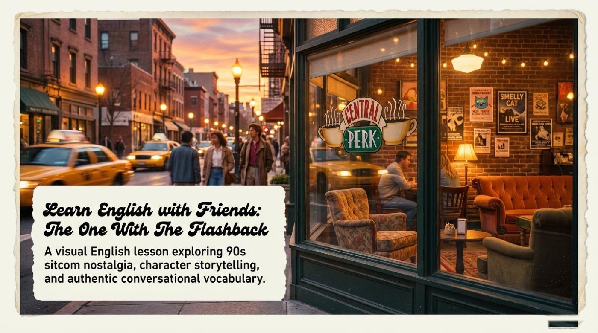
The episode begins, like many Friends disasters, with Janice. She asks the six friends a single awkward question, and that question detonates the entire plot. The slide deck captures the trigger with admirable precision: "The episode begins with a simple, awkward question from Janice. When the friends deny ever being romantically involved, she pushes them to reveal their near-misses. This question triggers a memory from three years earlier, launching us into the past."
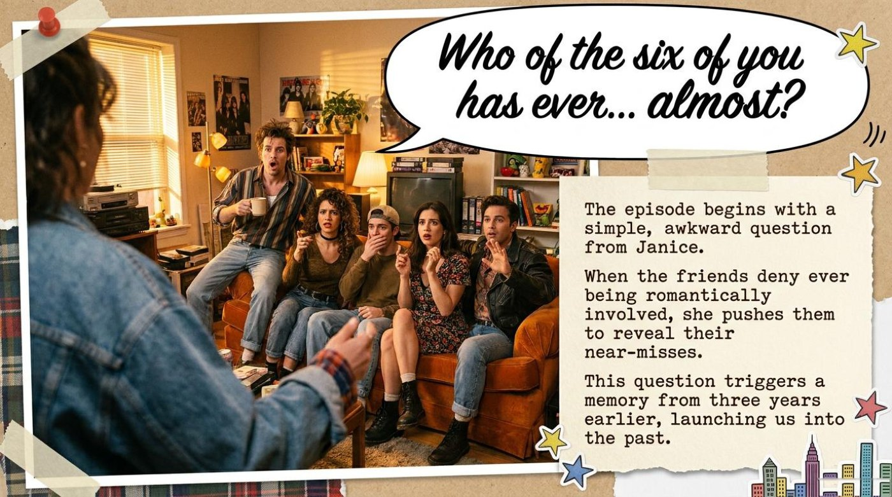
That single word, almost, is doing enormous narrative work. The entire episode is built on it. Every subplot the viewer is about to see is a near-miss, a moment when two characters almost connected but didn't. The slide is not just summarizing a plot point — it is teaching the reader how to read the episode. The flashback is not a random detour; it is a structural answer to a structural question.
The lesson then formally introduces the storytelling device that powers the entire episode. The slide defines it cleanly: "A flashback is a scene set in a time earlier than the main story. In 1993, the famous Central Perk coffee shop didn't exist yet — it was a dimly lit local bar. The friends barely knew each other, and their lives looked completely different." Three things happen in that single paragraph. The viewer learns a literary term (flashback), learns a piece of in-universe lore (Central Perk used to be a bar), and learns a thematic claim (the friends were strangers before they were family). That is a lot of teaching packed into two sentences.
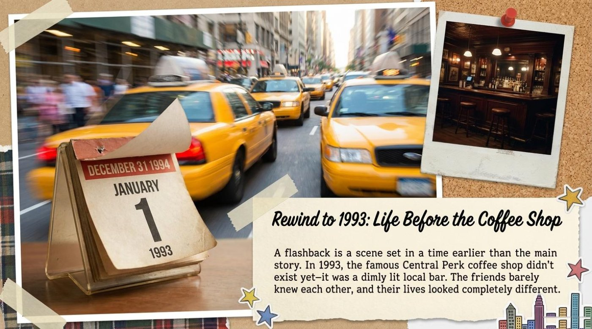
The first subplot lands on Chandler and his desperate search for a new roommate. The slide narrates it efficiently: "Chandler is desperately looking for a new person to live with. He initially chooses Eric, a photographer. However, their strange neighbor Mr. Heckles tricks Eric into leaving. By pure accident, Joey gets the apartment instead." Notice the comedic architecture: an intention, a sabotage, and an accidental resolution. That structure repeats across the entire episode, and it is the engine of almost every Friends plot.
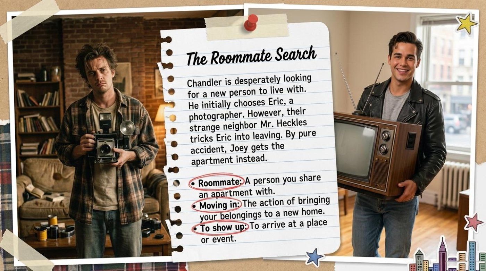
The vocabulary attached to this slide is deliberately ordinary, and that is the point. Roommate ("a person you share an apartment with"), moving in ("the action of bringing your belongings to a new home"), and to show up ("to arrive at a place or event") are everyday verbs that an intermediate learner genuinely needs. The lesson does not chase exotic vocabulary. It chases the vocabulary that actually runs through casual English conversation, which is much harder to find in a textbook than words like perpendicular or entrepreneur.
If Chandler's plot is about acquiring a roommate, Phoebe's is about losing one. The slide describes her quiet escape from Monica's apartment: "Phoebe secretly leaves Monica's apartment because Monica is too strict about cleaning. Phoebe wants to live in a land where people can spill. She sneaks out at night one lamp at a time to avoid hurting her friend's feelings." The image of Phoebe removing her belongings one lamp at a time is comic and sad in equal measure, and it teaches three more pieces of functional vocabulary: to sneak out, to spill, and the third degree.
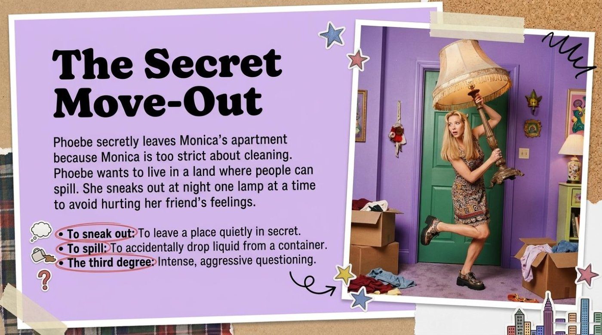
The third subplot is the heaviest. Ross discovers that his wife Carol is a lesbian, and the slide does not soften the blow: "Ross's world falls apart when he realizes his wife, Carol, is a lesbian. She recently met a woman named Susan at the gym, and they instantly connected. Ross is left drinking alone at the bar, confused about his future." The vocabulary here is more emotionally loaded — marriage, to hit it off, and to have a crush — and the lesson's decision to group them under a single slide about Ross's discovery shows good editorial instincts. The words belong together because the feelings belong together.
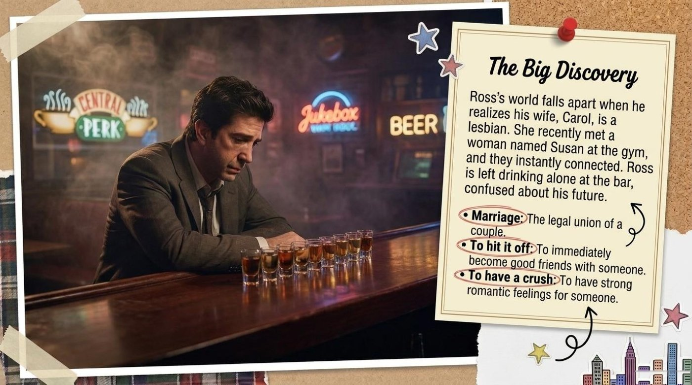
With the three origin stories established, the lesson pivots to the structural heart of the episode: the almost-moments. The slide is essentially a four-line poem: "Joey & Monica: A massive misunderstanding over a drink. Ross & Phoebe: A chaotic near-kiss at the bar. Chandler & Rachel: A wish for a meaningless fling. Chandler & Monica: A sweet moment of comfort." Each pairing is one short sentence, and each sentence carries an entire unwritten scene behind it. The slide is teaching the reader to compress narrative, to summarize a relationship in a single phrase, and to recognize that "almost" comes in many flavors — comic, romantic, desperate, and tender.
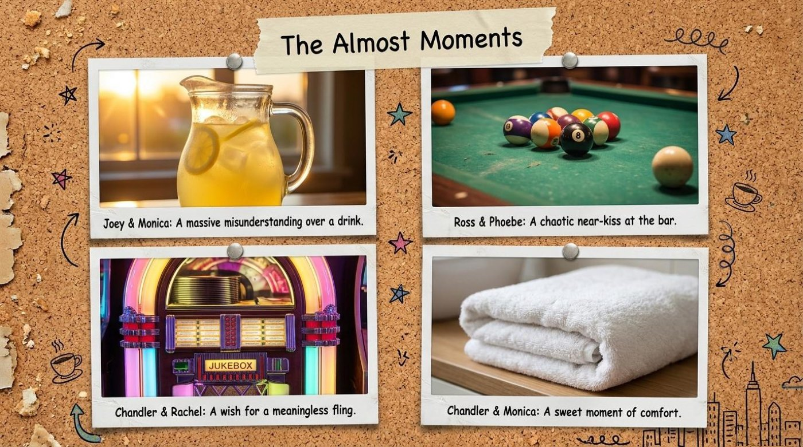
Of all the almost-moments, the Joey and Monica subplot is the one the slide deck lingers on, and it is not hard to see why. The setup is simple. The slide describes it this way: "When Joey is moving heavy boxes, he gets sweaty and exhausted. Monica invites him inside and asks, 'Do you want to come in for some lemonade?'" So far, so innocent. Then the slide drops the hammer: "Monica meant literal juice. Joey, however, interpreted 'lemonade' as a secret code for a romantic invitation, leading him to strip completely naked in her living room. Context is everything in English!"
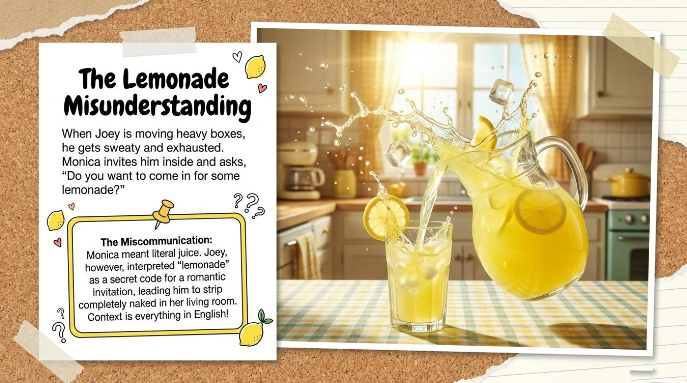
That final exclamation — "Context is everything in English!" — is the teacher's thesis statement for the entire lesson, and it deserves to be marked as such.
For a language learner, the practical takeaway is sharp. A word is not a self-contained object. It is a transaction between two people, and both people bring context to the table. The lesson of the lemonade scene is not "Joey was stupid." It is "English is a system in which even the most ordinary noun can become a misunderstanding if the social context is misread." That is a profoundly useful thing to understand, and it is rarely taught this directly.
Before the slang slide, the lesson inserts a short cultural-literacy slide titled Anatomy of a 90s Bar Scene. It defines four objects that populate the bar where most of the flashback takes place: "Cue ball: the solid white ball used to strike other balls. Jukebox: a coin-operated machine that plays selected music. Pool table: a large, green felt table used for playing billiards. Oboe: a wooden musical instrument played by blowing into a mouthpiece." None of these words are complicated, but they are all cultural. A learner who has never seen a pool table cannot fully picture the scene where Monica challenges Chandler, and a learner who has never heard a jukebox cannot hear the soundtrack the writers intended. Vocabulary is not just translation; it is also world-building.
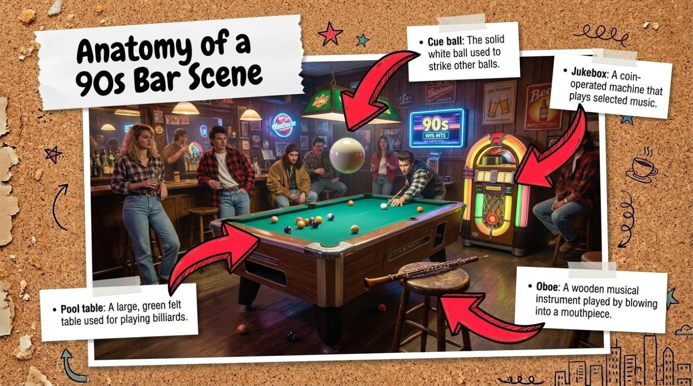
The lesson's most linguistically daring slide is the slang table. It pairs four colorful expressions with their standard-English translations and the episode moments that justify them. Bump uglies is glossed as "to have sexual intercourse" and attached to Janice's nosy question. Whip your butt is glossed as "to easily defeat someone in a game" and attached to Monica's pool challenge. Mix and match is glossed as "combining different types of things" and attached to Ross's bitter line that his marriage is not one. A meaningless fling is glossed as "a short, non-serious romantic encounter" and attached to Rachel's wish for one last adventure before marriage.
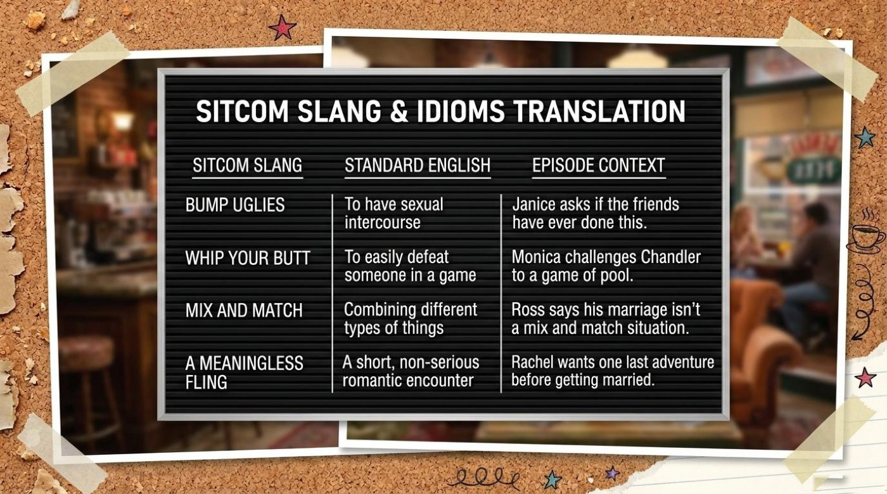
What makes this slide valuable is that it teaches register alongside definition. A learner who memorizes "bump uglies = to have sexual intercourse" has learned the wrong lesson. The right lesson is that bump uglies is vulgar, jokey, and unmistakably casual, and that a person who used it in a formal context would sound ridiculous. The slide's three-column format — slang, standard, episode context — quietly encodes that lesson. The middle column is not a synonym. It is a translation across registers.
The lesson's vocabulary falls into two clear tiers. The first tier is functional, everyday English: roommate, moving in, to show up, to sneak out, to spill, marriage. These are words a learner will use within a week of arriving in any English-speaking city. The second tier is idiomatic and register-sensitive: the third degree, to hit it off, to have a crush, a meaningless fling, mix and match, whip your butt, bump uglies. These are words a learner will hear constantly in casual conversation and almost never in a textbook.
Each item below carries the literal meaning (where one exists), the contextual meaning inside the episode, an example drawn from the lesson material, and the slide's own one-line gloss. Read them in order, then flip the cards below to test active recall.
Click any card to flip it. Use the button below to flip them all at once. Each card uses a different accent color so the deck feels alive rather than uniform.
The pattern across this vocabulary list is worth naming. Every word in the lesson is attached to a moment, not to a definition alone. Roommate is attached to Chandler's apartment search. Sneak out is attached to Phoebe's lamp-by-lamp exit. Lemonade is attached to Joey's catastrophic misunderstanding. The vocabulary is not a list — it is a map of the episode, and learning the words means learning the scenes. That is the lesson's deepest methodological choice, and it is the reason the deck works as language teaching rather than as trivia.
Beneath the vocabulary and the slapstick, the episode is held together by four symbolic structures. Each one is doing quiet thematic work, and naming them makes the lesson more than a list of words.
It is time to test what stuck. The quiz below is built directly from the lesson material — the plot, the vocabulary, and the lemonade scene that anchors it all. Each question gives instant feedback: the correct answer turns green, a wrong one turns red and shakes briefly, and a short explanation appears underneath. A floating "APPLAUSE!" or "BUZZ!" pops above the score bar on every answer. The final score unlocks one of three messages, and the "Watch it again" button resets everything for another round.
The lesson's own comprehension slides — one for plot recall, one for vocabulary — are reproduced below as a reference. They are the source material from which the interactive quiz questions were drawn, and reading them side by side with the quiz below is a useful way to see how a static slide deck becomes a dynamic assessment.
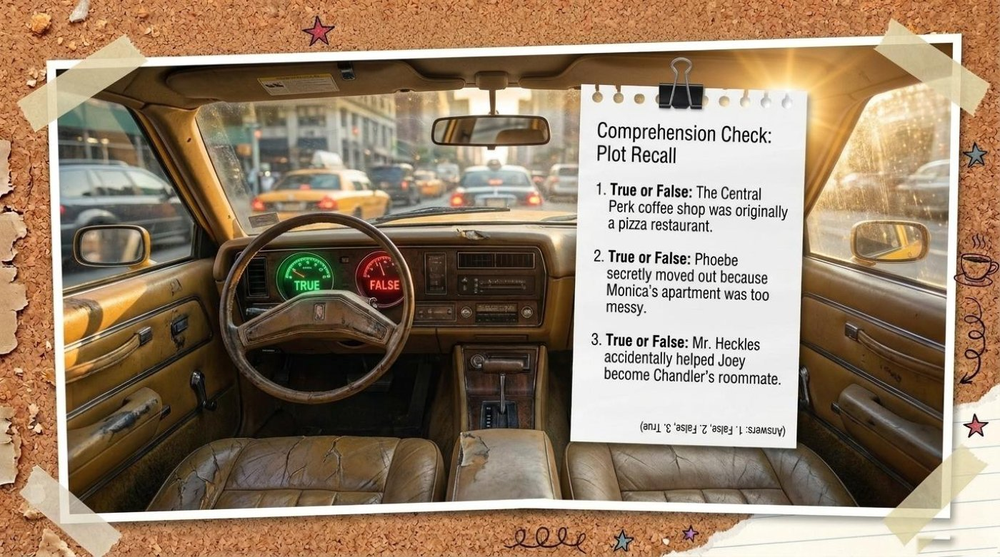
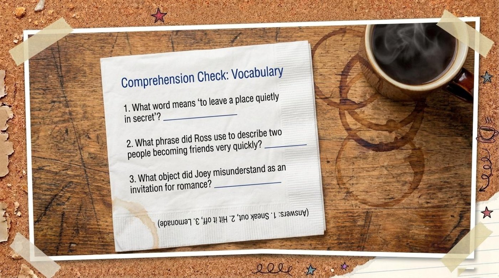
Excellent work.
The final slide of the deck hands the microphone back to the learner. Its framing line is the lesson's most quotable thesis: "Miscommunications and messy roommates happen in every language." That sentence is the entire episode distilled into nine words. The lemonade scene, the lamp-by-lamp move-out, the roommate search, the almost-kiss at the bar — they are all variations on a single human constant. People misunderstand each other, people live too close to each other, and people almost do things they will spend years remembering. English is not special in this respect. What is special is the precision with which English lets a speaker name those experiences.
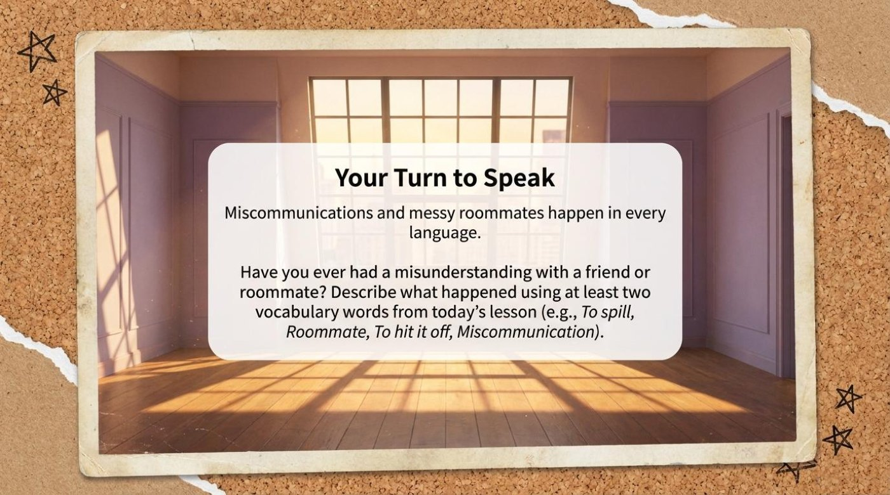
The takeaway for a language learner is sharp and practical. Treat every new word as a small story, not as a translation. When a word shows up in a scene, ask what the scene is doing to the word. When two characters use the same word differently — Monica's lemonade and Joey's lemonade — that gap is the lesson. Pay attention to the almost moments in your own week, and try to describe them in English using the vocabulary from this lesson: sneak out, hit it off, have a crush, the third degree. Review the original slide deck, replay the memory game, retake the quiz, and most importantly, watch the episode again with these words in hand. The second viewing will feel like a different show, and that is exactly the point. Vocabulary, taught this way, does not just enlarge the dictionary. It enlarges the episode.
The original slide deck that accompanies this lesson. Opens in a new tab.